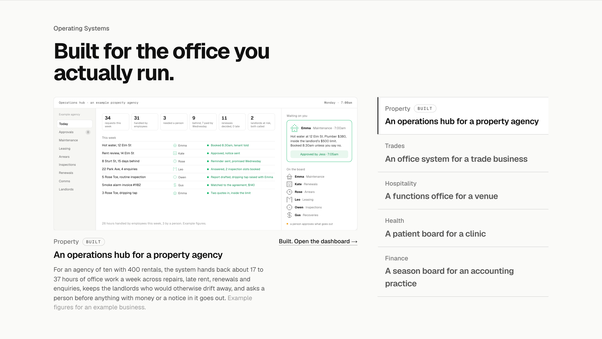
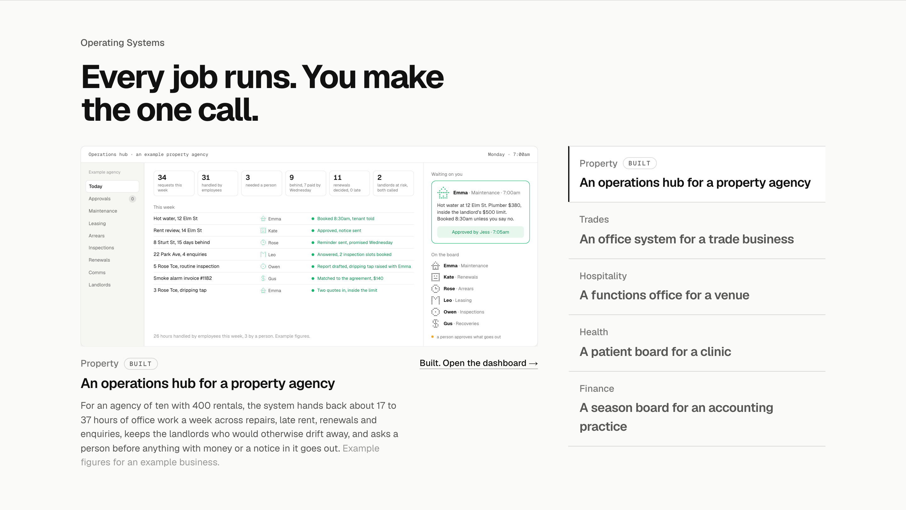
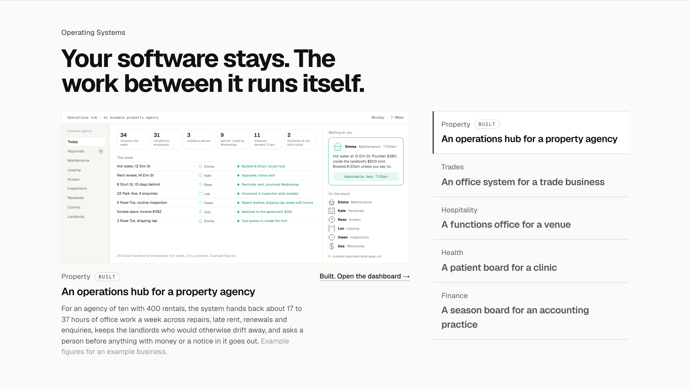

Operating Systems: the heading three ways
Detail 1 of 5 for the Operating Systems section, which was built and approved but never had its details pass. The section as it is on the homepage at 1440 with Property active; only the heading changes. The label stays “Operating Systems”. Then the list, the line under the screen, the close and the phone layout, each the same way.
Today“Built for the office you actually run.”The heading from the Industries section, kept when the section became Operating Systems. It says who it is for, not what the section shows.

1. What it is“The whole office, on one screen.”Says what the operating system is at the scale this rung sells: not one job, the whole office. Sits under the AI Employees heading without repeating it. Recommended.

2. The owner’s view“Every job runs. You make the one call.”Says what each screen shows: the work already done and one decision left. Closest to the screens, and an echo of the AI Employees heading.

3. The position“Your software stays. The work between it runs itself.”The position from the value model, with no software named: the business keeps what it runs and the system does the work in between. The most explicit about why this is not a product they already own.
